Our Solutions
Power Backup, Generation & Power Quality
0 9 · O U R S O L U T I O N S Power Backup, Generation & Power Quality Online UPS, multi-brand DG sets, voltage stabilisers and solar power – from our partner brands. Online UPS Systems 1 kVA – 4000 kVA, modular & unitary MAKE: Delta · Eaton · Krykard Silent Diesel Generator Sets 25 – 2000 kVA · multi-brand engines MAKE: Paikane Diesel Generator Sets CPCB IV+ compliant, 82.5 – 160 kVA MAKE: Kirloskar Servo Voltage Stabilisers Servo-controlled stabilisers & static regulators MAKE: Krykard · Jindal Electric · BVCS · Recons Automatic Voltage Controllers Servo stabilisers & special transformers MAKE: Jindal Electric Solar Power Systems Rooftop & ground-mounted, with solar inverters MAKE: Delta
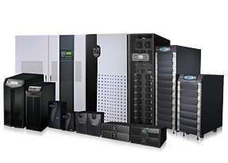
Online UPS SystemsDelta · Eaton · Krykard Silent Diesel Generator SetsPaikane
Silent Diesel Generator SetsPaikane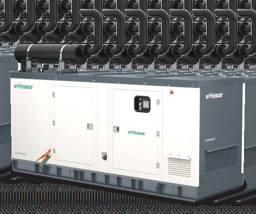
Diesel Generator SetsKirloskar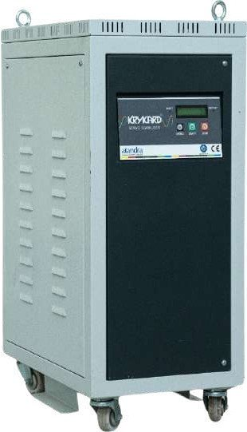
Servo Voltage StabilisersKrykard · Jindal Electric · BVCS · Recons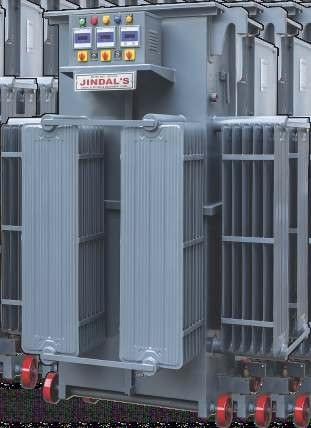
Automatic Voltage ControllersJindal Electric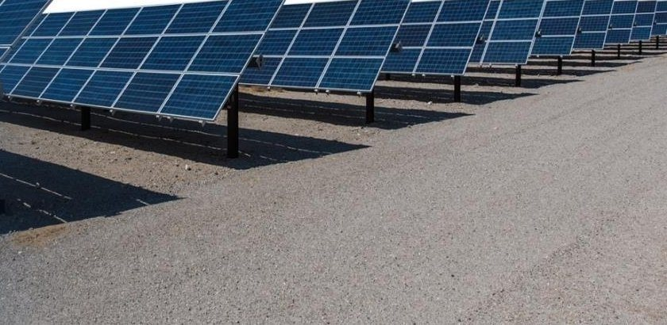
Solar Power SystemsDeltaAutomation, Instrumentation & Water
0 9 · O U R S O L U T I O N S Automation, Instrumentation & Water Drives, PLC / SCADA automation, test instruments and complete water treatment plants. VFD · PLC · HMI Drives & controls for plant automation MAKE: Delta SCADA System Centralised monitoring, alarms & reporting MAKE: Delta · SBEM · Toshcon Automatic Dam Gate Control PLC / SCADA with VFD-driven gates MAKE: Delta · SBEM Power Quality & Test Instruments Analysers, earth & insulation testers, clamp meters MAKE: Krykard · Toshcon Water Treatment Plants WTP · RO · DM · Softening · UF · ETP · STP MAKE: Micro Filteration Technologies · Toshcon Industrial RO Plants Skid-mounted reverse osmosis MAKE: Micro Filteration Technologies
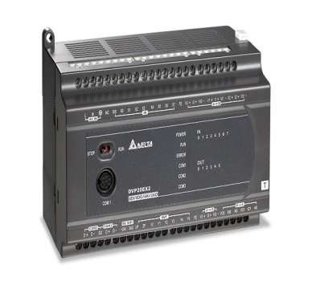
VFD · PLC · HMIDelta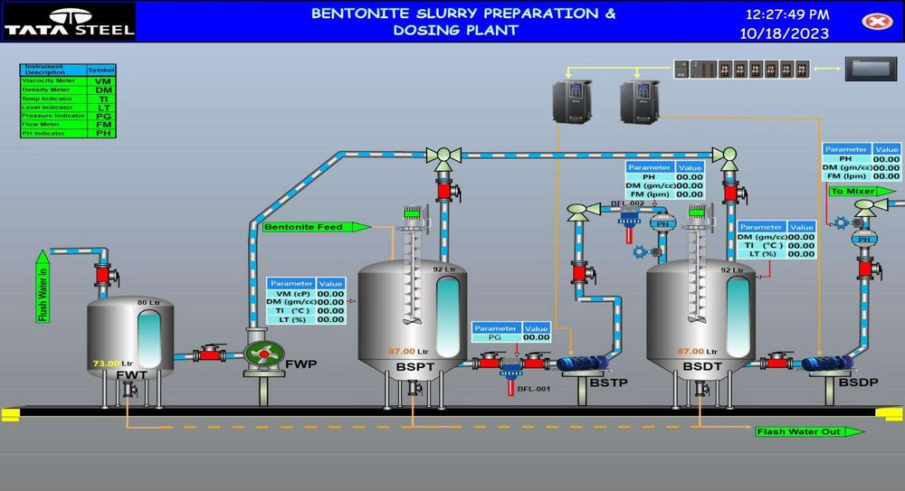
SCADA SystemDelta · SBEM · Toshcon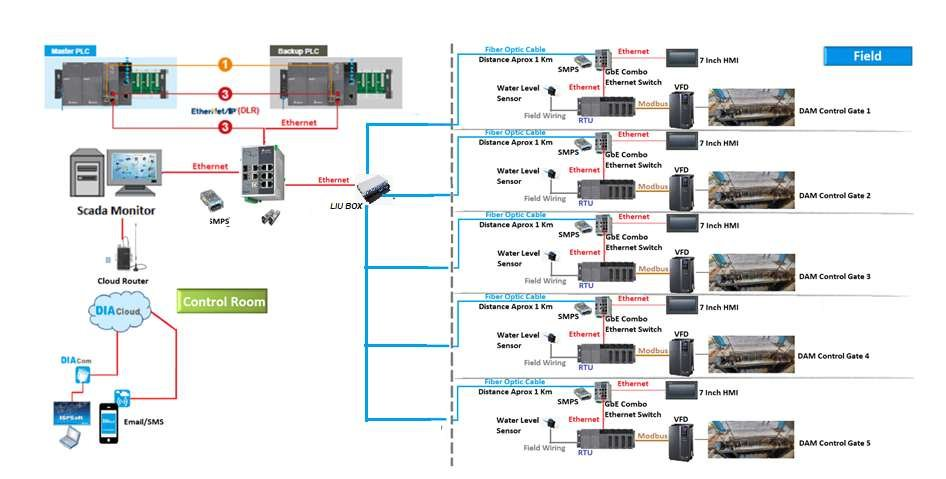
Automatic Dam Gate ControlDelta · SBEM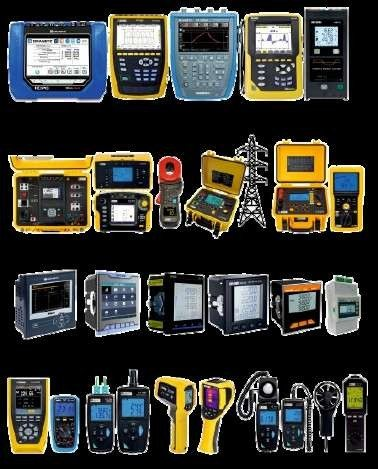
Power Quality & Test InstrumentsKrykard · Toshcon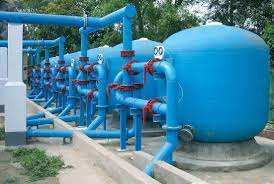
Water Treatment PlantsMicro Filteration Technologies · Toshcon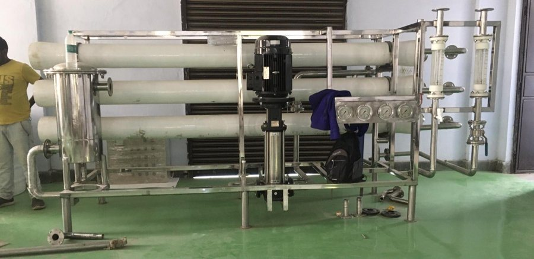
Industrial RO PlantsMicro Filteration TechnologiesInstrumentation & Control Rooms
0 9 · O U R S O L U T I O N S Instrumentation & Control Rooms Field instruments, drives and control-room systems for water-supply schemes and industry. Electromagnetic & Ultrasonic Flow Meters For water supply, effluent & process lines MAKE: SBEM · Toshcon Radar & Level Transmitters Pulse & FMCW radar for tanks and channels MAKE: SBEM · Toshcon Pressure Transmitters Intelligent, HART & battery-operated MAKE: SBEM · Toshcon Variable Frequency Drives For pumps, blowers & conveyors MAKE: Delta HMI & Touch Panels Operator panels for PLC / SCADA MAKE: Delta Control-Room Video Walls SCADA & monitoring display walls MAKE: Delta · Xtreme Media
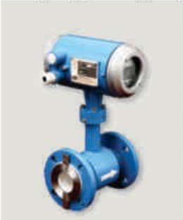
Electromagnetic & Ultrasonic Flow MetersSBEM · Toshcon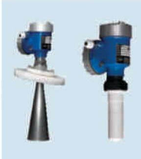
Radar & Level TransmittersSBEM · Toshcon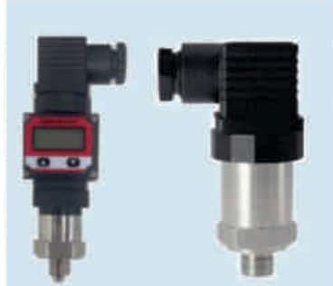
Pressure TransmittersSBEM · Toshcon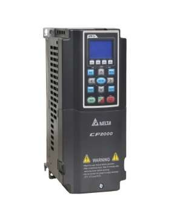
Variable Frequency DrivesDelta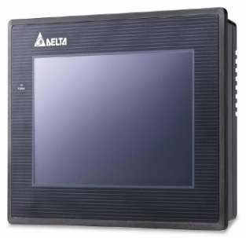
HMI & Touch PanelsDelta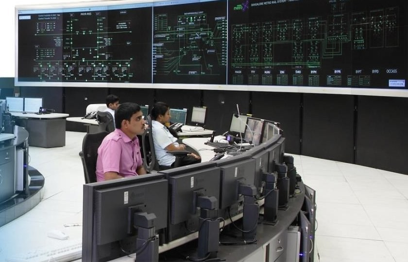
Control-Room Video WallsDelta · Xtreme MediaBuilding, Hygiene & Structures
0 9 · O U R S O L U T I O N S Building, Hygiene & Structures Building automation, displays, EV charging, hygiene stations and insulated pre-fab structures. Building Management System Smart building with LOYTEC MAKE: Loytec-Delta LED Screens & Video Walls Indoor & outdoor displays MAKE: Delta · Xtreme Media EV Chargers – AC & DC Wall-mount & fast chargers MAKE: Delta Hygiene Stations Touch-free SS 304 hygiene stations MAKE: Nexgen Hygiene Systems Pre-Fab Buildings PUF / PIR panels & porta cabins MAKE: Dignus Infra Cold Rooms & Clean Rooms Walk-in cold rooms & cleanroom partitions MAKE: Dignus Infra
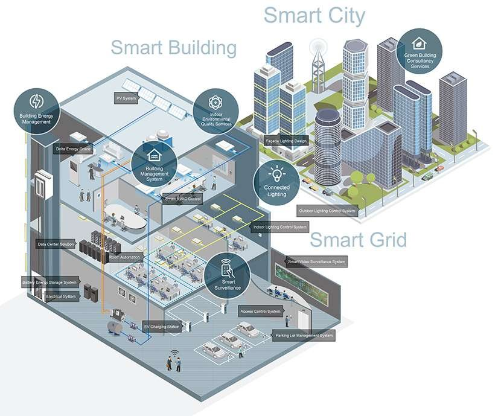
Building Management SystemLoytec-Delta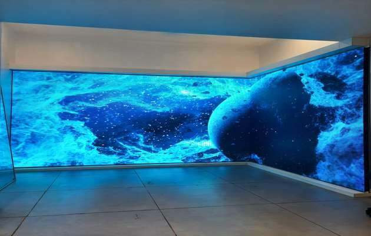
LED Screens & Video WallsDelta · Xtreme Media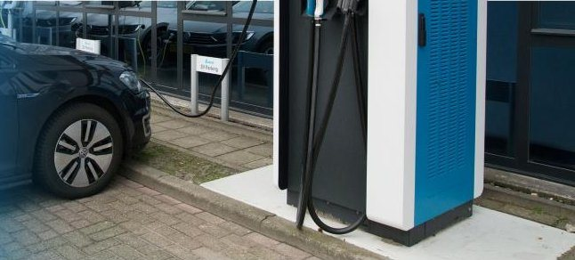
EV Chargers – AC & DCDelta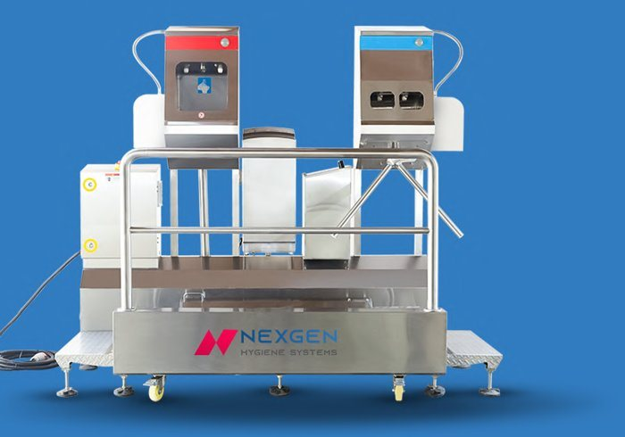
Hygiene StationsNexgen Hygiene Systems Pre-Fab BuildingsDignus Infra
Pre-Fab BuildingsDignus Infra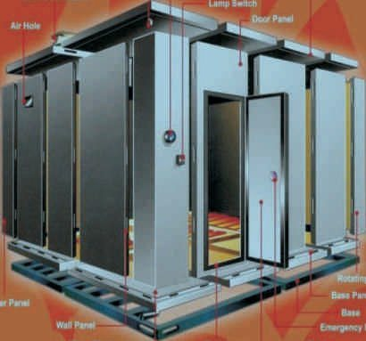
Cold Rooms & Clean RoomsDignus InfraPower, Energy & Water Plants
0 9 · O U R S O L U T I O N S Power, Energy & Water Plants Data-centre power, energy storage, power-conditioning transformers and on-site water treatment plants. Data Centre Infrastructure Modular UPS & edge data centres MAKE: Delta · Eaton Energy Storage Systems Lithium-ion battery energy storage MAKE: Delta Isolation & Auto Transformers Safe, clean power for sensitive loads MAKE: Krykard · Jindal Electric · Recons Static Voltage Regulators Fast-response regulation for sensitive equipment MAKE: Krykard Water Treatment Plant – On Site Installed & commissioned for industry MAKE: Micro Filteration Technologies Ultrafiltration (UF) Systems UF membranes & skids MAKE: Micro Filteration Technologies
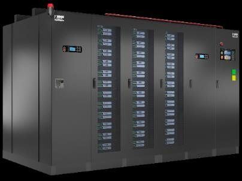
Data Centre InfrastructureDelta · Eaton Energy Storage SystemsDelta
Energy Storage SystemsDelta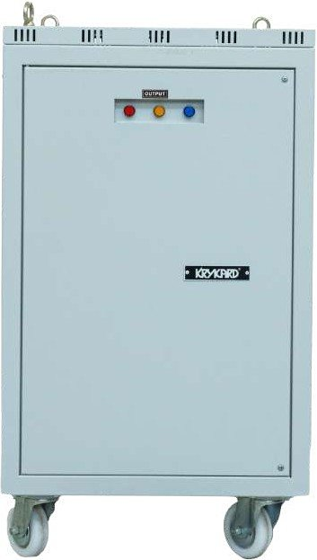
Isolation & Auto TransformersKrykard · Jindal Electric · Recons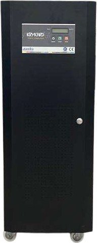
Static Voltage RegulatorsKrykard Water Treatment Plant – On SiteMicro Filteration Technologies
Water Treatment Plant – On SiteMicro Filteration Technologies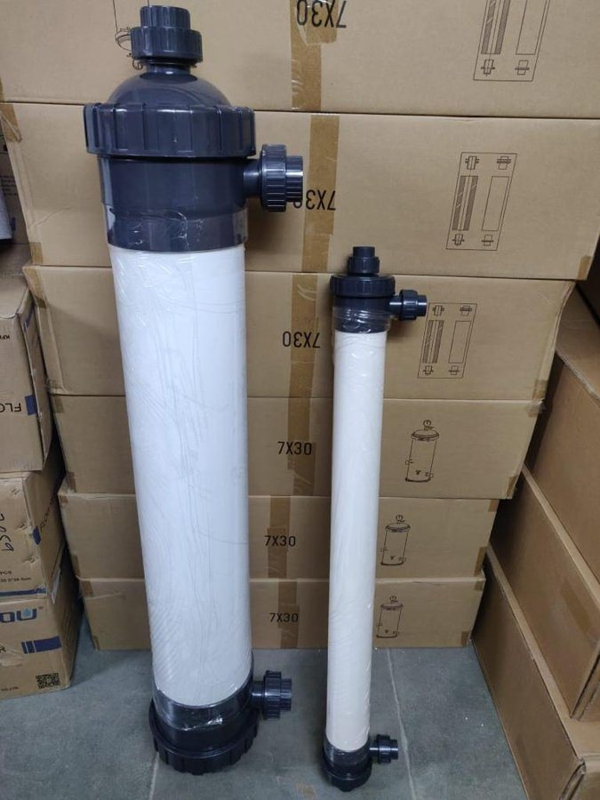
Ultrafiltration (UF) SystemsMicro Filteration TechnologiesProcess, Hygiene & Insulated Panels
0 9 · O U R S O L U T I O N S Process, Hygiene & Insulated Panels SS fabricated plants, pressure vessels, hygiene entry systems, PUF / PIR panels and refrigerated vans. SS Fabricated Plants & Tanks Packaged drinking water & process MAKE: Micro Filteration Technologies Softening / DM Vessels FRP pressure vessels MAKE: Micro Filteration Technologies · Pentair Sole Cleaning & Hand Disinfection Up to 10 persons / min MAKE: Nexgen Hygiene Systems Cleanroom Air Showers HEPA-filtered, sensor-operated entry MAKE: Nexgen Hygiene Systems PUF / PIR & Roofing Panels 30 – 200 mm, wall & roof MAKE: Dignus Infra Refrigerated Van Bodies Insulated PUF panel bodies MAKE: Dignus Infra
 SS Fabricated Plants & TanksMicro Filteration Technologies
SS Fabricated Plants & TanksMicro Filteration Technologies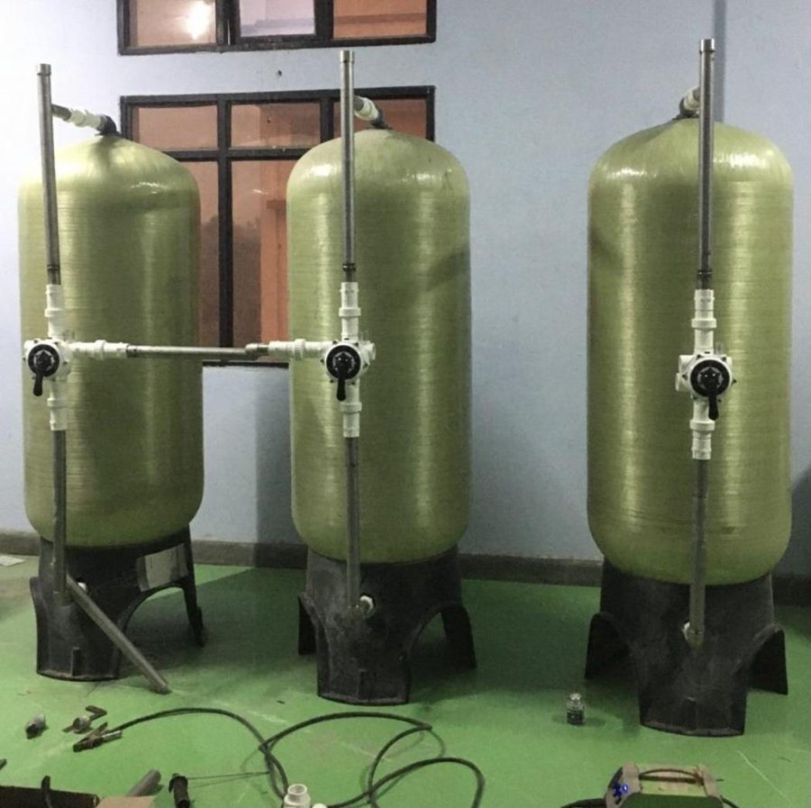
Softening / DM VesselsMicro Filteration Technologies · Pentair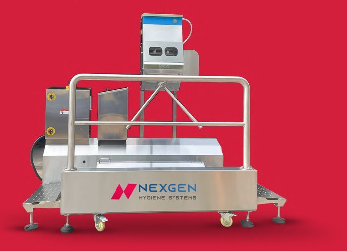
Sole Cleaning & Hand DisinfectionNexgen Hygiene Systems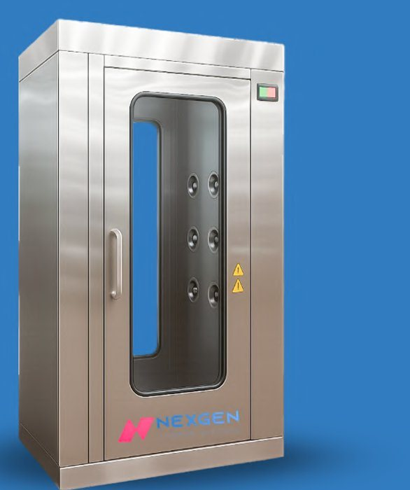
Cleanroom Air ShowersNexgen Hygiene Systems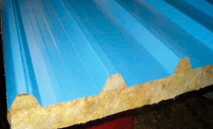
PUF / PIR & Roofing PanelsDignus Infra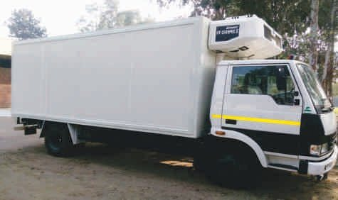
Refrigerated Van BodiesDignus InfraOur OEM Partners
S E C T I O N 1 0 Our OEM Partners 40+ OEM Partners We supply, install and service genuine products of these original equipment manufacturers, with manufacturer warranty and support. Delta Siemens ABB Schneider L&T Havells Polycab Finolex Legrand Philips Crompton Greaves Honeywell Bosch Cummins Kirloskar Caterpillar Volvo Penta Eaton Vertiv Exide Grundfos Dow Cisco HP Dell Otis KEI Krykard Paikane Unimag Sterling Jindal Electric Survival Wire & Cables (SCL) Alpha MHO Enterprises BVCS Bronx Systems Trijal Electrikals Neptune Mahindra Micro Filteration Technologies Nexgen Hygiene Systems Dignus Infra Jindal Steel Recons SBEM Toshcon Instruments Xtreme Media Ahuja Plaza Wires KEC International KSB Phoenix Contact 80 more makes across electrical, power, automation, water, building & ICT – as per client specification.